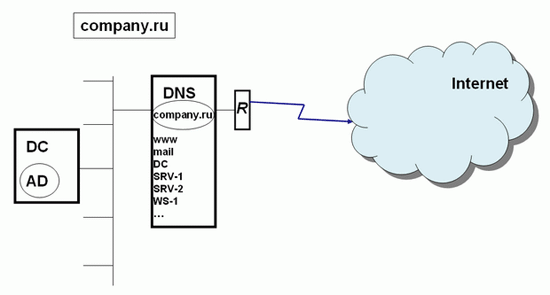
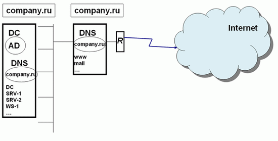
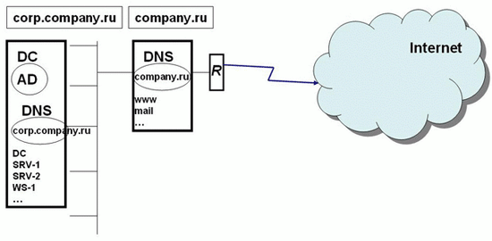
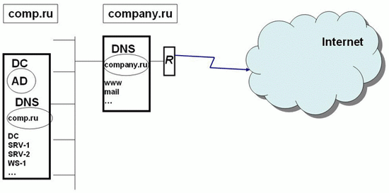

В службе каталогов должен быть механизм именования объектов, позволяющий однозначно идентифицировать любой объект каталога. В каталогах на базе протокола LDAP для идентификации объекта в масштабе всего леса используется механизм отличительных имен ( Distinguished Name, DN ). В Active Directory учетная запись пользователя с именем User домена company.ru, размещенная в стандартном контейнере Users, будет иметь следующее отличительное имя: "DC=ru, DC=company, OU=Users, CN=User".
Обозначения:
DC (Domain Component) — указатель на составную часть доменного имени;
OU (Organizational Unit) — указатель на организационное подразделение (ОП);
CN (Common Name) — указатель на общее имя.
Если отличительное имя однозначно определяет объект в масштабе всего леса, то для идентификации объекта относительно контейнера, в котором данный объект хранится, существует относительное отличительное имя ( Relative Distinguished Name, RDN ). Для пользователя User из предыдущего примера RDN-имя будет иметь вид " CN=User ".
Кроме имен DN и RDN, используется основное имя объекта ( User Principal Name, UPN ). Оно имеет формат <имя субъекта>@<суффикс домена>. Для того же пользователя из примера основное имя будет выглядеть как User@company.ru.
Имена DN, RDN могут меняться, если объект перемещается из одного контейнера AD в другой. Для того чтобы не терять ссылки на объекты при их перемещении в лесу, всем объектам назначается глобально уникальный идентификатор ( Globally Unique Identifier, GUID ), представляющий собой 128-битное число.
Планирование пространства имен и структуры AD — очень ответственный момент, от которого зависит эффективность функционирования будущей корпоративной системы безопасности. При этом надо иметь в виду, что созданную вначале структуру в процессе эксплуатации будет очень трудно изменить (например, в Windows 2000 изменить имя домена верхнего уровня вообще невозможно, а в Windows 2003 решение этой задачи требует выполнения жестких условий и тщательной подготовки данной операции). При планировании AD необходимо учитывать следующие моменты:
тщательный выбор имен доменов верхнего уровня;
качество коммуникаций в компании (связь между отдельными подразделениями и филиалами);
организационная структура компании;
количество пользователей и компьютеров в момент планирования;
прогноз темпов роста количества пользователей и компьютеров.
При планировании имен доменов верхнего уровня можно использовать различные стратегии и правила. В первую очередь необходимо учитывать вопросы интеграции внутреннего пространства имен и пространства имен сети Интернет — т.к. пространство имен AD базируется на пространстве имен DNS, при неправильном планировании могут возникнуть проблемы с безопасностью, а также конфликты с внешними именами.
Рассмотрим основные варианты.
Один домен, одна зона DNS (рис. 6.4).
На рисунке в левой части — внутренняя сеть компании, справа — сеть Интернет, две сети разделены маршрутизатором " R " (кроме маршрутизатора, на границе могут быть также прокси-сервер или межсетевой экран).

Рис.
6.4.
В данном примере используется одна и та же зона DNS (company.ru) как для поддержки внутреннего домена AD с тем же именем (записи DC, SRV-1, SRV-2, WS-1), так и хранения ссылок на внешние ресурсы компании — веб-сайт, почтовый сервер (записи www, mail ).
Такой способ максимально упрощает работу системного администратора, но при этом DNS-сервер, доступный для всей сети Интернет, хранит зону company.ru и предоставляет доступ к записям этой зоны всем пользователям Интернета. Таким образом, внешние злоумышленники могут получить полный список внутренних узлов корпоративной сети. Даже если сеть надежно защищена межсетевым экраном и другими средствами защиты, предоставление потенциальным взломщикам информации о структуре внутренней сети — вещь очень рискованная, поэтому данный способ организации пространства имен AD не рекомендуется (хотя на практике встречается довольно часто).
"Расщепление" пространства имен DNS - одно имя домена, две различные зоны DNS(рис. 6.5).

Рис.
6.5.
В данном случае на различных серверах DNS создаются различные зоны с одним и тем же именем company.ru. На внутреннем DNS-сервере функционирует зона company.ru.для Active Directory, на внешнем DNS-сервере — зона с таким же именем, но для ссылок на внешние ресурсы. Важный момент — данные зоны никак между собой не связаны — ни механизмами репликации, ни ручной синхронизацией.
Здесь во внешней зоне хранятся ссылки на внешние ресурсы, а во внутренней на внутренние ресурсы, используемые для работы Active Directory. Данный вариант несложно реализовать, но для сетевого администратора возникает нагрузка управления двумя разными доменами с одним именем.
Поддомен в пространстве имен DNS для поддержки Active Directory (рис. 6.6).

Рис.
6.6.
В данном примере корневой домен компании company.ru служит для хранения ссылок на внешние ресурсы. В домене company.ru настраивается делегирование управление поддоменом corp.company.ru на внутренний DNS-сервер, и именно на базе домена corp.company.ru создается домен Active Directory. В этом случае во внешней зоне хранятся ссылки на внешние ресурсы, а также ссылка на делегирование управления поддоменом на внутренний DNS-сервер. Таким образом, пользователям Интернета доступен минимум информации о внутренней сети. Такой вариант организации пространства имен довольно часто используется компаниями.
Два различных домена DNS для внешних ресурсов и для Active Directory (рис. 6.7.).

Рис.
6.7.
В этом сценарии компания регистрирует в Интернет-органах два доменных имени: одно для публикации внешних ресурсов, другое — для развертывания Active Directory.
Данный сценарий планирования пространства имен самый оптимальный. Во-первых, имя внешнего домена никак не связано с именем внутреннего домена, и не возникает никаких проблем с возможностью показа в Интернет внутренней структуры. Во-вторых, регистрация (покупка) внутреннего имени гарантирует отсутствие потенциальных конфликтов, вызванных тем, что какая-то другая компания может зарегистрировать в Интернете имя, совпадающее с внутренним именем вашей компании.
Домен с именем типа company.local.
Во многих учебных пособиях и статьях используются примеры с доменными именами вида company.local. Такая схема вполне работоспособна и также часто применяется на практике. Однако в материалах разработчика системы Windows, корпорации Microsoft, нет прямых рекомендаций об использовании данного варианта.